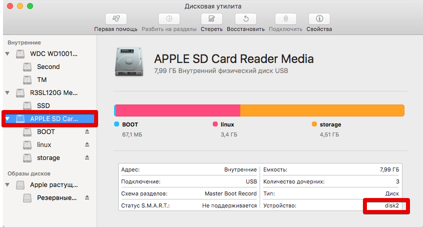
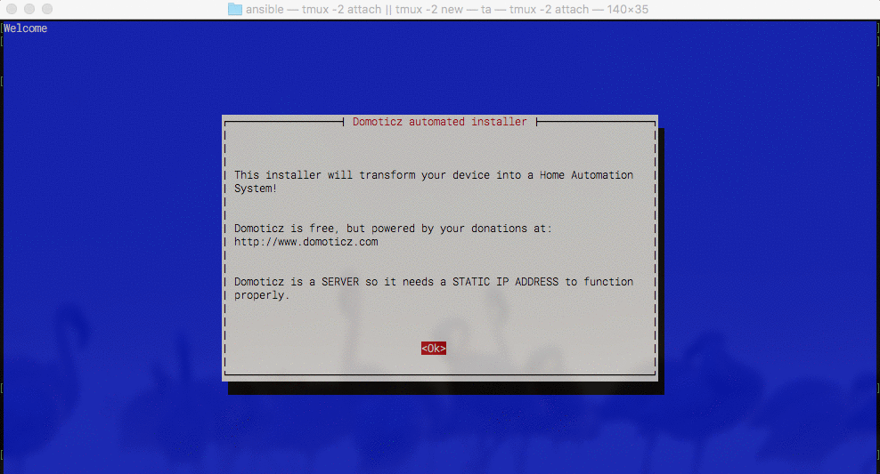

Пост носит формат памятки, памятки о OrangePi PC+ и еже с ним. Пост будет периодически дополняться... Если появляются вопросы готов ответить.
Установка системы на SD
Настраиваем часовой пояс и время
Domoticz, установка и первоначальная настройка
И так, вот у нас на руках OrangePi PC+, мы подключаем её и видим какой-то характерный китайский [бред]{style="text-decoration: line-through;"} андройд, наверно. Нужно поставить то, что, для начала, можно хотя бы прочитать...
Установка системы на SD
Для того чтобы загрузиться со своей системы, нужно в слот для MicroSD вставить карту с ОС, если такая есть, то железка в первую очередь будет стараться загрузиться с неё.
- Скачиваем подходящий образ тут (http://www.orangepi.org/downloadresources/) и распаковываем(можно установить xz с помощью homebrew).
- Устанавливаем систему, раскатав скачанный образ на SD-флешку:
sudo dd if=~/Downloads/Armbian_5.35_Orangepipcplus_Ubuntu_xenial_default_3.4.113_desktop of=/dev/disk2
/dev/disk2 - это наша флешка. На какое устройство раскатывать систему нужно смотреть в "Дисковой утилите" или через diskutil list

Ждать придётся долго, но по завершению увидим что-то подобное:
6553600+0 records in
6553600+0 records out
3355443200 bytes (3.4 GB) copied, 548.165 s, 6.1 MB/s
После можно грузиться с флешки. Просто вставляем её в апельсин и включаем питание.
Подключив мышь, клаву и монитор можно получить доступ к десктопу, или воспользоваться ssh-доступом(user — root, pass — orangepi или 1234). Что-бы узнать IP загляните в список DHCP клиентов на вашем роутере.
Настраиваем часовой пояс и время
dpkg-reconfigure tzdata
apt-get install ntp ntpdate
Установка Domoticz
Устанавливается Domoticz одной командой:
sudo curl -L install.domoticz.com | bash

На все диалоги отвечаем нажатием на "Enter"